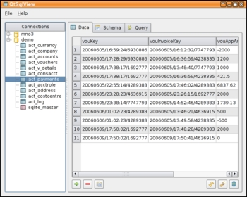
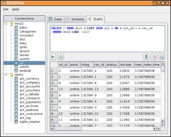

|  Browsing an accounting table saving in a SQLite database. |
|  Color syntax highlight for custom SQL queries. |
| More Screenshots |
{kind=link}
{kind=link}
QtSqlView - Qt-based SQL Database Viewer
QtSqlView is a simple and easy to use SQL database browser written in Qt 4.x using the excellent QtSql components. Using QtSql drivers it can natively connect to MySQL, PostgreSQL and SQLite databases. Furthermore other database systems may be accessed using their ODBC drivers. QtSqlView is released under the GNU General Public License: source and win32 binary may be downloaded below.
This short program was initially written for a set of windows users, who need to access and edit a PostgreSQL database. This is possible with M$ Access and ODBC, but the configuration of PostgreSQL's ODBC driver and the ODBC DSN is far too complicated for the average database editor. Thus problem-free access of open-source databases was top priority for QtSqlView.
QtSqlView does not aim to be a generic SQL database tool including table schema editor and dialog-based data entry. For this purpose you may consider using TOra or Kexi.
QtSqlView boasts the following features:
- Problem-free connecting to MySQL, PostgreSQL and SQLite databases on Windows.
- Add, delete and modify a list of database connections.
- Browse, edit, save and revert SQL tables, system tables and views of registered connections
- Copy selected cells as tab-separated text to the clipboard.
- View table schema including primary key.
- Execute custom SQL queries on the database connect and view results.
- SQL syntax highlighting in query editor.
- Uses Qt4's greatly improved SQL components.
The source code package can be built on Linux, Windows, OS/X and probably other Qt platforms using the usual qmake && make commands.
The Windows binary version was built with Qt 4.2 and includes native drivers to access MySQL, PostgreSQL and SQLite databases. No other program package is needed. The versions of the included drivers are available and will be updated when needed.
Downloads
| QtSqlView Version 0.8.0 (current) released 2006-10-10 | ||
| Source code archive: | Download QtSqlView-0.8.0.tar.bz2 (33kb) | Browse online |
| MD5: 465b98f2981a9d4d9db00e1eeec23ef9 | ||
| Windows binary setup: | Download QtSqlView-0.8.0-1-win32.exe (4263kb) | Contained Package Versions |
| MD5: a237716dd0fc697ab502623debf546f1 | ||
{kind=link}
{kind=link}
{kind=link}
{kind=link}
{kind=link}